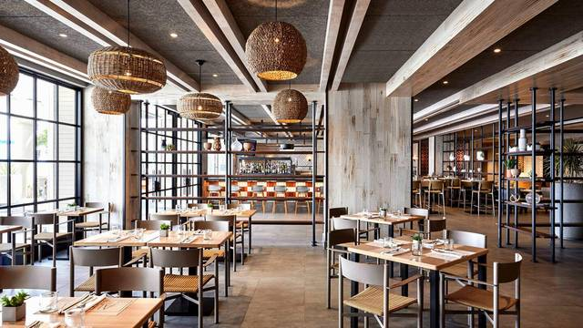

atmosphere of our Restaurant
The atmosphere of Continental Restaurant is a perfect blend of elegance and comfort, designed to provide guests with a memorable dining experience. The interior features warm lighting, sophisticated décor, and a welcoming ambiance that sets the stage for enjoying delicious continental cuisine. Whether customers are looking for a quiet dinner, a family gathering, or a business meeting, the restaurant offers a cozy yet upscale environment. Soft background music enhances the mood, while attentive service ensures a delightful and satisfying visit.
